DraveChat
v1.0.2Een lokale AI-chat: praat met een taalmodel op je eigen pc, zonder cloud.
Download (322 MB) Uitleg en broncode op GitHubGratis, transparant, met aandacht gebouwd. Software zoals het ooit bedoeld was.
Alle apps zijn gratis te downloaden en te gebruiken. Steun via donaties houdt ons gemotiveerd om verder te bouwen en te verbeteren.
Geen verborgen kosten, geen advertenties, geen nepwaarschuwingen. Wat de app belooft, doet de app. Punt.
Bij elk product staat toegankelijkheid voorop. Hoog contrast, leesbare letters, helder ontwerp. Voor iedereen, niet alleen voor wie scherp ziet.
Ontwikkeld in Nederland, hosted in de EU. Jouw data blijft onder Europese privacywetgeving. Geen tracking, geen profielen, geen verkoop.
53 apps, allemaal gratis en open source (GPL-3.0). Klik op Download, pak de zip uit en start het programma. Zie je een blauw scherm van Windows? Klik op Meer informatie en dan Toch uitvoeren.
Een lokale AI-chat: praat met een taalmodel op je eigen pc, zonder cloud.
Download (322 MB) Uitleg en broncode op GitHubEen lokale, privé spraakassistent: praat via de microfoon, hij antwoordt met een echte stem, zoekt zelf online en kan je pc bedienen.
Download (132 MB) Uitleg en broncode op GitHub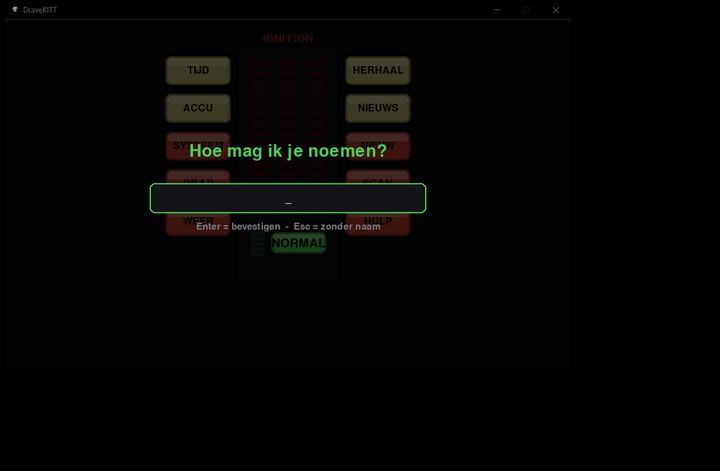
Een pratende KITT-achtige assistent (Knight Rider-sfeer) die lokaal op je pc draait.
Download (123 MB) Uitleg en broncode op GitHub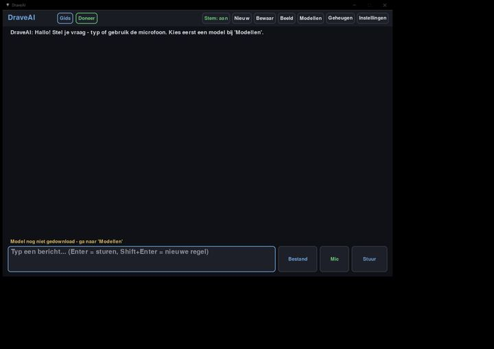
Je eigen, lokale AI-werkplek (DraveAI). Lichte versie; met een NVIDIA-kaart kun je de snelle versie zelf installeren (uitleg op GitHub).
Download (279 MB) Uitleg en broncode op GitHub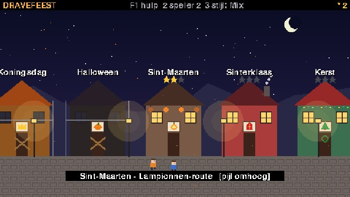
Een dorp vol feestdagen met voor elke feestdag een eigen spel, alleen of met z'n tweeen.
Download (26 MB) Uitleg en broncode op GitHub ▶ Bekijk de uitlegvideo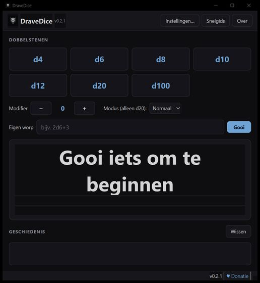
Een dobbelsteen-roller voor D&D en andere tafelspellen. Lokaal, offline, gratis (met donatie). Grote, goed leesbare cijfers.
Download (35 MB) Uitleg en broncode op GitHub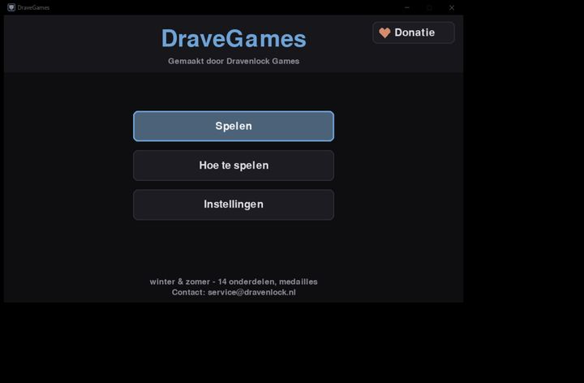
Sport-minigames in C64/Atari-stijl met medailles. Vier onderdelen, winter en zomer, voor 1 speler (medailles halen) of 2 spelers om-en-om op dezelfde pc.
Download (57 MB) Uitleg en broncode op GitHub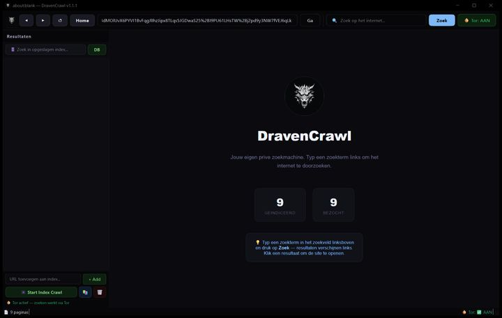
Een kerkerkruiper-spel (dungeon crawler) van Dravenlock Games.
Download (191 MB) Uitleg en broncode op GitHub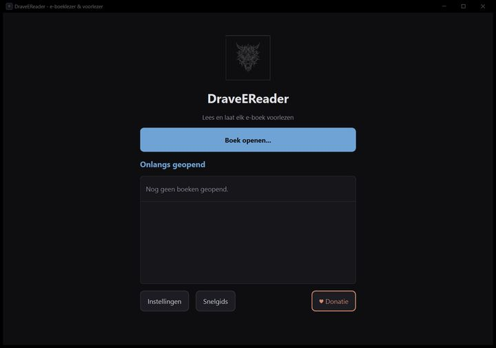
E-boeklezer en voorlezer.
Download (99 MB) Uitleg en broncode op GitHub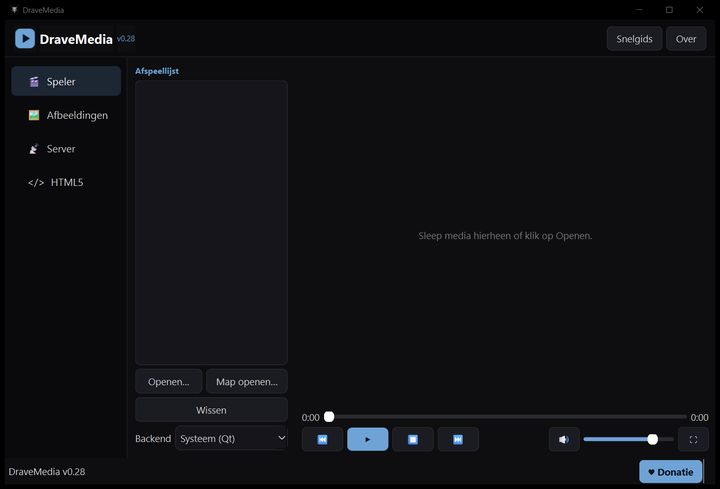
Alles-in-een mediaspeler (Dravenlock).
Download (208 MB) Uitleg en broncode op GitHub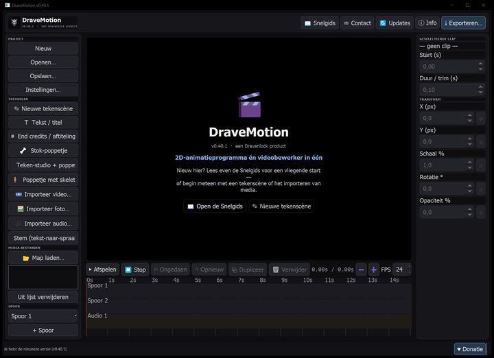
Een portable animatie- en videostudio: tekenen, tijdlijn en exporteren, alles lokaal.
Download (157 MB) Uitleg en broncode op GitHub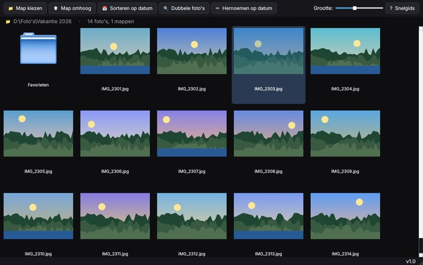
Foto's bekijken, sorteren op datum en dubbele foto's vinden.
Download (49 MB) Uitleg en broncode op GitHub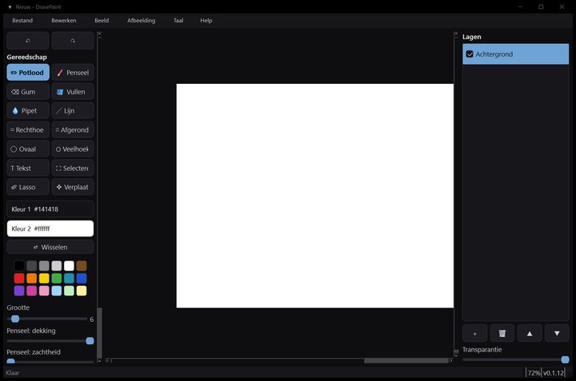
Eenvoudige tekenapp met lagen.
Download (109 MB) Uitleg en broncode op GitHub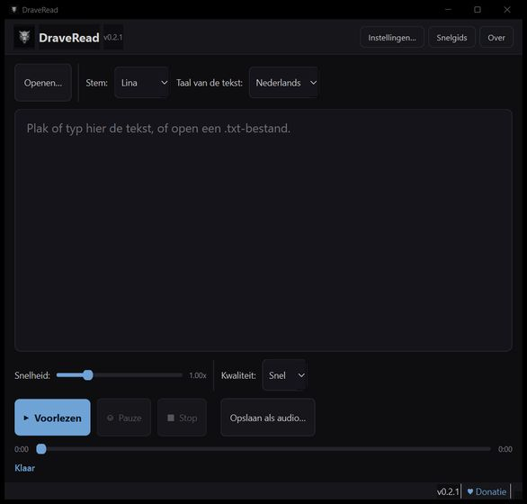
Voorlezer (tekst-naar-spraak) met natuurlijke, neurale stemmen via Neuvoice. On-device: draait op je eigen pc, geen cloud.
Download (108 MB) Uitleg en broncode op GitHub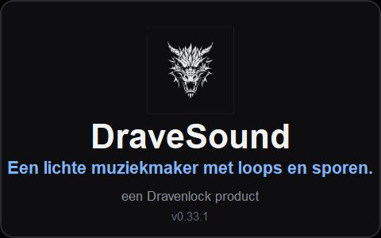
Een lichte, portable muziekmaker: zet loops op meerdere sporen en maak je eigen nummers.
Download (109 MB) Uitleg en broncode op GitHubEen lichte fotobewerker met lagen (Photoshop-achtig), in Dravenlock-stijl.
Download (54 MB) Uitleg en broncode op GitHub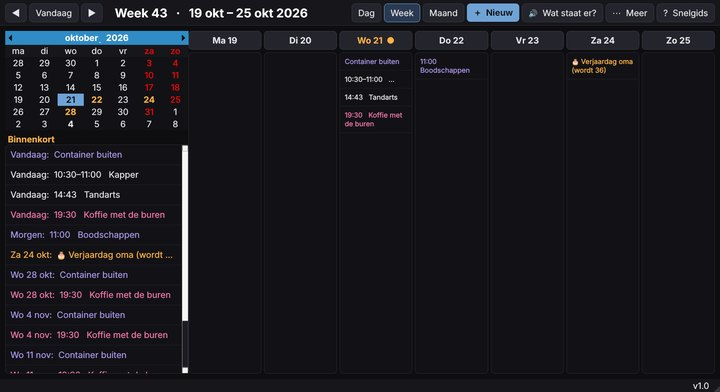
Een grote, duidelijke agenda met herinneringen die ook worden voorgelezen.
Download (73 MB) Uitleg en broncode op GitHub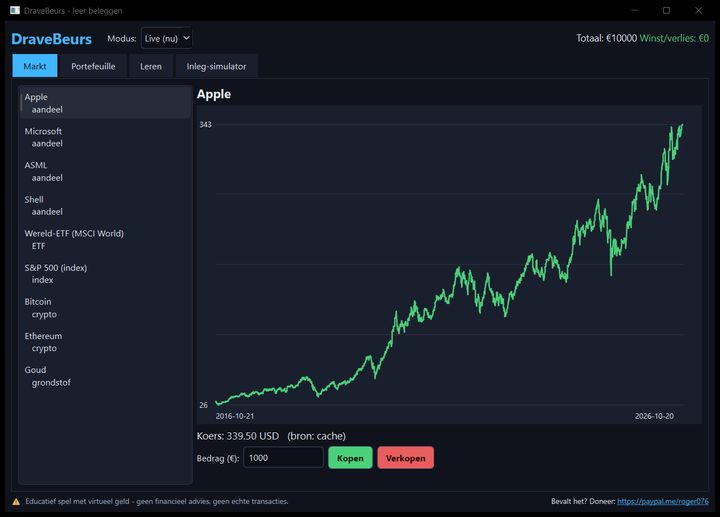
Volg aandelen en koersen op een overzichtelijk dashboard.
Download (36 MB) Uitleg en broncode op GitHub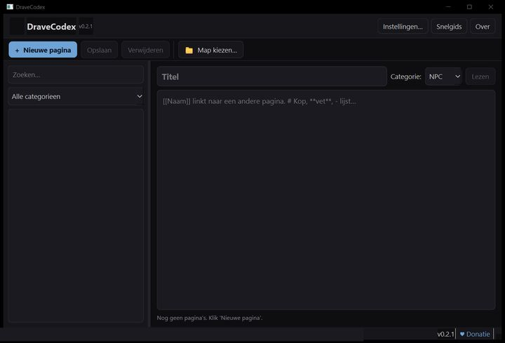
Offline campagne-wiki.
Download (35 MB) Uitleg en broncode op GitHub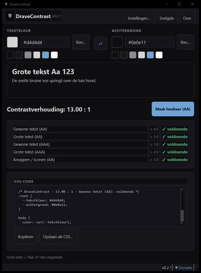
Kleurcontrast-checker volgens WCAG. Kies een tekstkleur en een achtergrond; de app rekent de contrastverhouding uit en zegt of het voldoende is (AA/AAA), met een live voorbeeld. Lokaal, offline, gratis (met donatie).
Download (35 MB) Uitleg en broncode op GitHub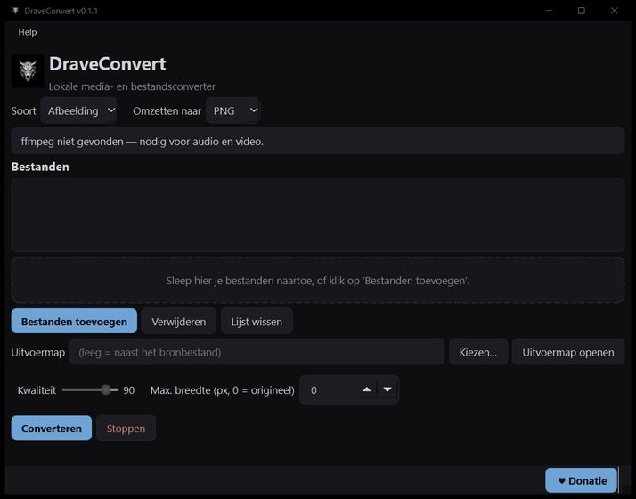
Lokale media- en bestandsconverter (afbeeldingen, audio, video). Lokaal, offline, geen cloud, geen account.
Download (41 MB) Uitleg en broncode op GitHubWYSIWYG HTML5-editor: bouw een webpagina door widgets te slepen, met live voorbeeld en export naar gewone HTML of een installeerbare PWA. Alles draait lokaal; de editor zit in dit pakket.
Download (197 MB) Uitleg en broncode op GitHub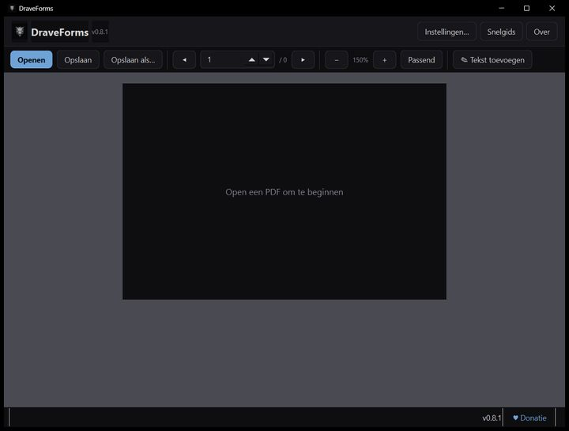
Een PDF-lezer die invulbare formulieren kan invullen (dropdowns, tekstvakken, vinkjes) EN tekst aan een bestaande PDF kan toevoegen - ook formulieren die normaal alleen in Adobe werken. Lokaal, offline, gratis (met donatie).
Download (52 MB) Uitleg en broncode op GitHub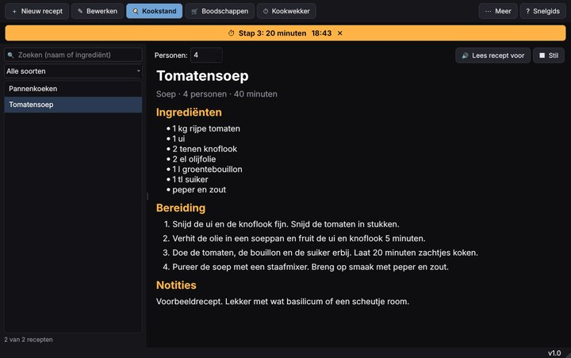
Je eigen recepten met kookstand, voorlezen en kookwekkers.
Download (73 MB) Uitleg en broncode op GitHubChat en bestanden delen op je eigen netwerk (LAN) - zonder internet, zonder cloud. Onderdeel van de Dravenlock-reeks.
Download (35 MB) Uitleg en broncode op GitHub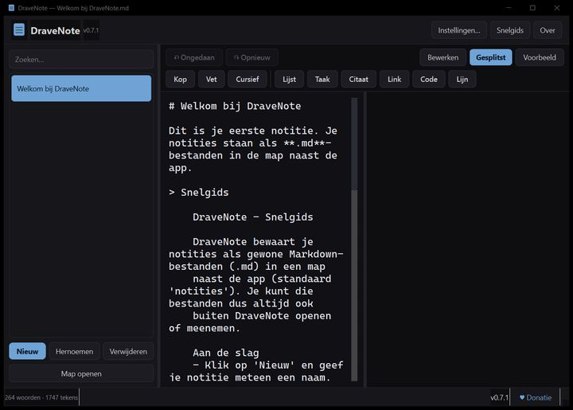
Lokale markdown-notities.
Download (35 MB) Uitleg en broncode op GitHub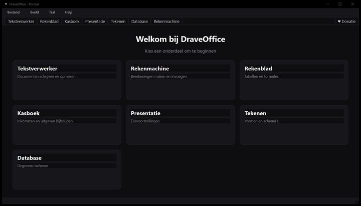
Lokale, offline office-suite: tekstverwerker, rekenblad, rekenmachine, kasboek, presentatie, tekenen en database.
Download (81 MB) Uitleg en broncode op GitHub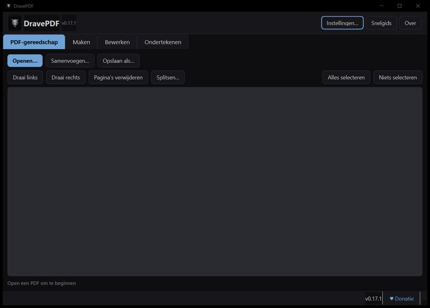
PDF-gereedschap en ondertekenen.
Download (52 MB) Uitleg en broncode op GitHub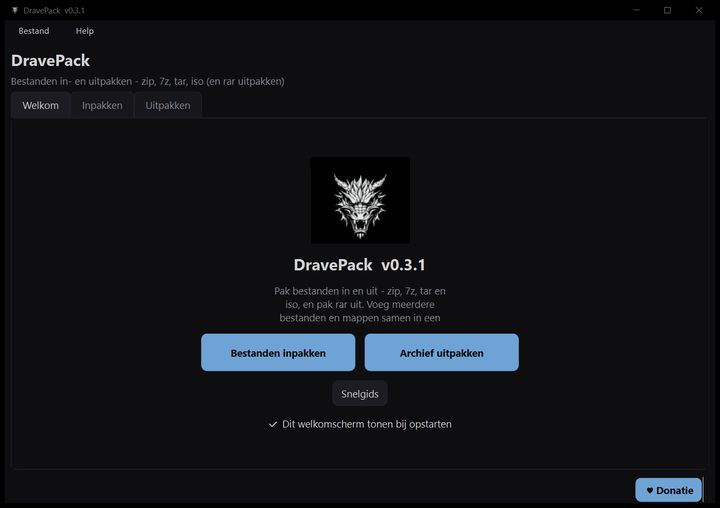
Bestanden in- en uitpakken.
Download (40 MB) Uitleg en broncode op GitHub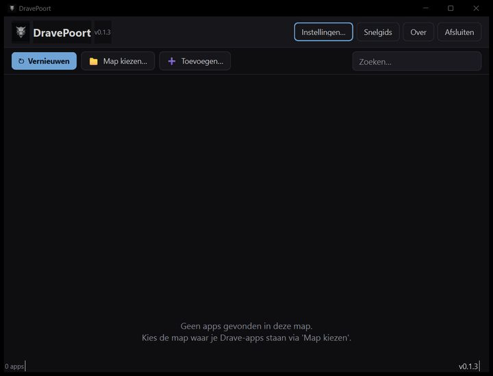
Startportaal voor je Dravenlock-apps.
Download (35 MB) Uitleg en broncode op GitHub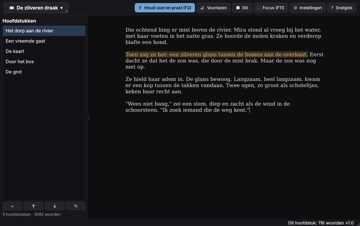
Rustig schrijven aan je boek, met inspreken en voorlezen.
Download (123 MB) Uitleg en broncode op GitHub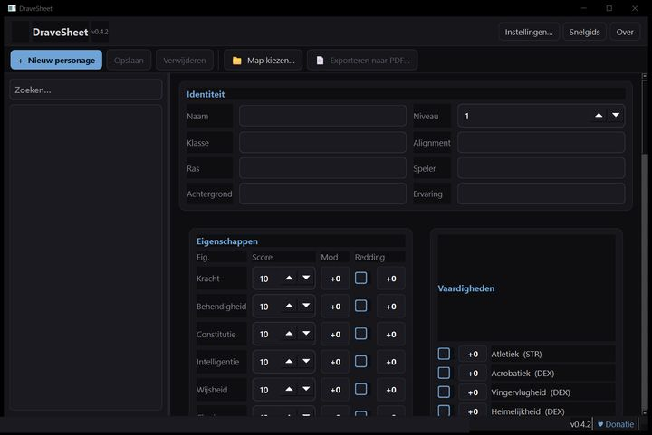
Invulbare D&D character sheets.
Download (52 MB) Uitleg en broncode op GitHub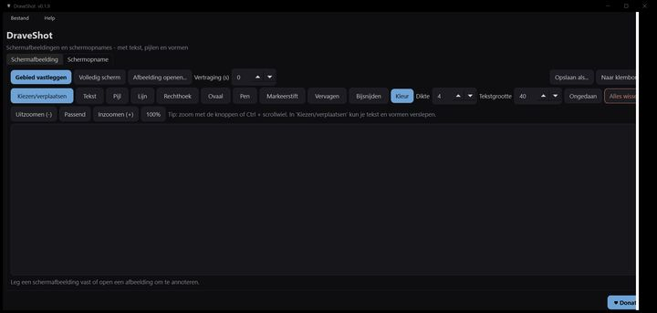
Schermafbeeldingen en schermopnames met annotaties.
Download (35 MB) Uitleg en broncode op GitHub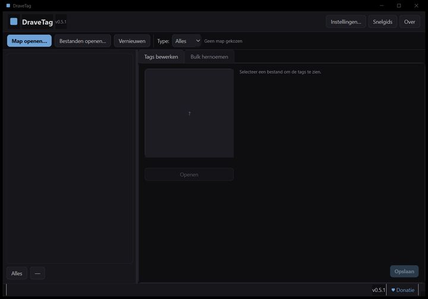
Media-tags bewerken en bulk hernoemen.
Download (100 MB) Uitleg en broncode op GitHubOffline vertaler.
Download (270 MB) Uitleg en broncode op GitHub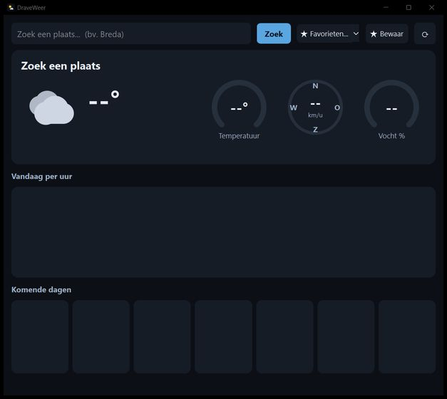
Het weerbericht en de verwachting voor jouw plaats, groot en duidelijk.
Download (36 MB) Uitleg en broncode op GitHub ▶ Bekijk de uitlegvideo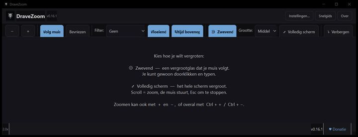
Schermvergrootglas: vergroot het stuk scherm rond je muis, met filters (grijswaarden, kleuren omkeren, hoog contrast) voor wie slecht ziet. Lokaal, offline, gratis (met donatie).
Download (35 MB) Uitleg en broncode op GitHubDeskButler: je digitale butler voor e-mail, taken, notities, downloads en meer, in één venster.
Download (272 MB) Uitleg en broncode op GitHub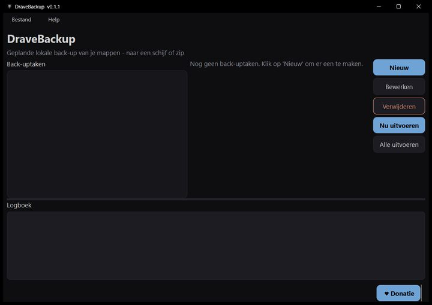
Geplande lokale back-up van je mappen.
Download (35 MB) Uitleg en broncode op GitHubEen snelle, toegankelijke verkenner voor je bestanden. Lokaal, offline, donationware.
Download (53 MB) Uitleg en broncode op GitHub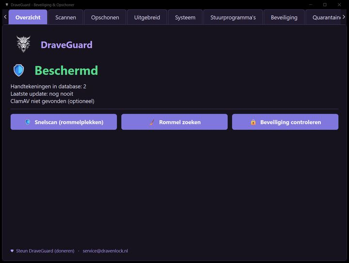
Een beveiligingsdashboard voor je pc: houdt in de gaten wat er draait en waarschuwt bij gevaar.
Download (228 MB) Uitleg en broncode op GitHub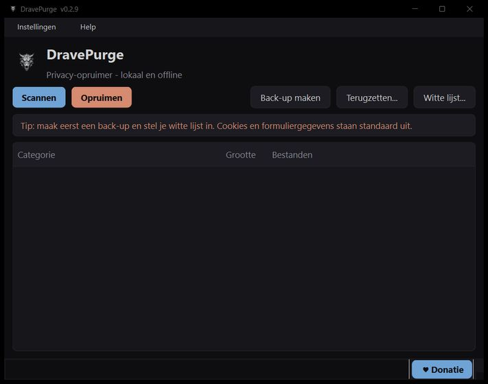
Privacy-opruimer.
Download (36 MB) Uitleg en broncode op GitHub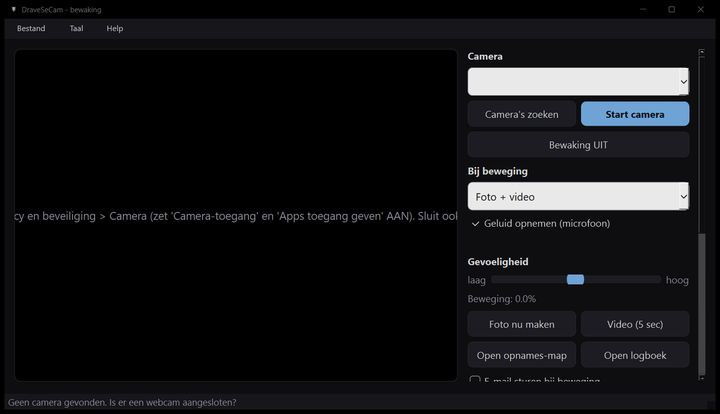
Lokale, offline bewakingscamera.
Download (165 MB) Uitleg en broncode op GitHubComplete uninstaller.
Download (35 MB) Uitleg en broncode op GitHub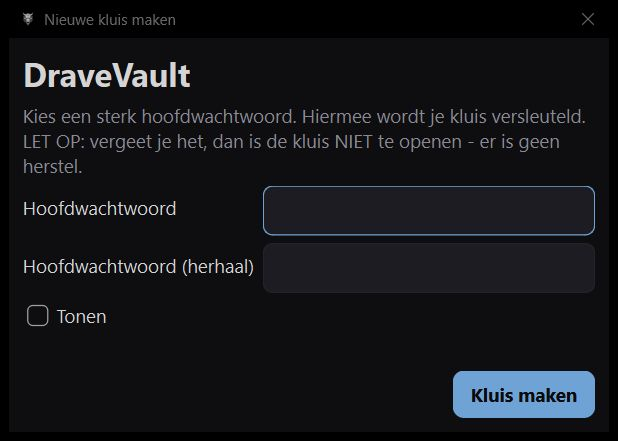
Lokale, versleutelde wachtwoord- en notitiekluis.
Download (39 MB) Uitleg en broncode op GitHubVoorkant voor de Windows-firewall.
Download (36 MB) Uitleg en broncode op GitHubMaak van je Python-programma een Windows-installatie (setup.exe), met knoppen in plaats van commando's.
Download (26 MB) Uitleg en broncode op GitHubEen setup-maker: bouw een nette installatie en uninstaller voor je eigen programma's.
Download (26 MB) Uitleg en broncode op GitHubEen Tor-onion-servertje: deel een eigen website anoniem via het Tor-netwerk.
Download (229 MB) Uitleg en broncode op GitHubJe AI-chat als server.
Download (306 MB) Uitleg en broncode op GitHubDe Dravenlock-webbrowser: een eigen, privacyvriendelijke browser.
Download (305 MB) Uitleg en broncode op GitHub ▶ Bekijk de uitlegvideo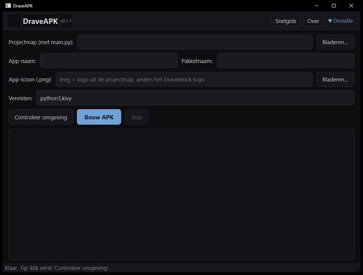
Bouw je Python/Kivy-app naar Android, met knoppen.
Download (36 MB) Uitleg en broncode op GitHubKITT op je telefoon (Android). De KITT-Server op je pc is de motor: die doet het denkwerk, de telefoon praat en luistert. Je hebt ze allebei nodig.
KITT-Server downloaden (76 MB) KITT Mobile (telefoon-app): broncode op GitHub KITT-Server: uitleg op GitHubVraag, idee, bug-melding? Wij lezen alles. Reactie meestal binnen een paar dagen.